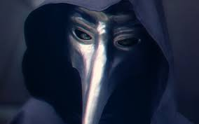
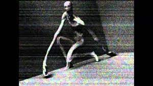
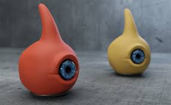
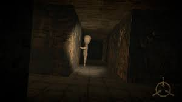

La Fundación SCP es una organización secreta administrada por los gobiernos de todo el mundo para contener y estudiar individuos, entidades, lugares, objetos y fenómenos anómalos que desafían la ley natural (denominados como «objetos SCP»). SCP significa Special Containment Procedures (procedimientos de contención especial). A pesar de que la Fundación tiene la intención de estudiar dichos objetos, no se explica a ciencia cierta cómo se crearon o cómo se contienen, todo gira alrededor de lo peligrosos que son estos objetos.
Secciones.
Scp 096 Scp 131 Investigadores.Anomalías Más Conocidas.
Scp 049.
SCP-049 está contenido dentro de una Celda Estándar de Contención Segura para Humanoides en el Sector-02 de Investigación del Sitio-19. SCP-049 deberá ser sedado antes de intentar movilizarlo.SCP-049 es un ente humanoide de unos 1.9 metros de estatura, que tiene la apariencia de un doctor de la plaga medieval. Si bien SCP-049 parece llevar los ropajes gruesos y la máscara de cerámica propias de esa profesión, sus prendas parecen haber crecido a partir del cuerpo de SCP-049 a lo largo del tiempo1, y es casi indiscernible de la forma que pueda haber bajo ellas. Los rayos X indican que, a pesar de esto, SCP-049 tiene una estructura esquelética humanoide bajo su capa exterior.
Scp 096.
SCP-096 es una criatura humanoide que mide aproximadamente 2.38 metros de altura. El sujeto muestra muy poca masa muscular, el análisis preliminar de masa corporal sugiere una desnutrición leve. Sus brazos son extremadamente desproporcionados con respecto al resto del cuerpo del sujeto, con una longitud aproximada de 1,5 metros cada uno. La piel carece prácticamente de pigmentación y no hay indicios de que posea vello corporal. La mandíbula de SCP-096 se puede abrir cuatro (4) veces lo normal que un ser humano promedio.
Scp 106.

No se permite ninguna interacción física con SCP-106 en ningún momento. Toda interacción física debe ser aprobada vía votación por no menos de dos terceras partes del Consejo-O5. Dicha interacción debe llevarse a cabo en ubicaciones AR-II de máxima seguridad, después de una evacuación general del personal no esencial. Todo el personal (Investigadores, Seguridad, Clase D, etc.) deben permanecer por lo menos a sesenta metros de la celda de contención en todo momento, excepto en eventos de ruptura. SCP-106 debe ser mantenido en un contenedor sellado, compuesto de acero reforzado con plomo.
Scp 131.
SCP-131-A y SCP-131-B (cariñosamente apodados “Eye-Pods” por parte del personal) son un par de criaturas con forma de lágrima de aproximadamente 30 cm (1 pie) de longitud, con un solo ojo azul en medio de sus cuerpos. SCP-131-A es de un color naranja, mientras que SCP-131-B es de color amarillo mostaza. En la base de cada criatura hay una protuberancia en forma de rueda que permite la locomoción, lo que sugiere que las criaturas tienen un origen biomecánico.
Scp 173
Trasladado al Sitio-19 en 1993. Su origen es aún desconocido. Está construido de hormigón y barras de refuerzo con trazos de pintura en aerosol marca Krylon. SCP-173 está animado y es extremadamente hostil. El objeto no se puede mover mientras esté dentro del campo de visión directa de alguien. El contacto visual hacia SCP-173 no se debe romper en ningún momento. El personal asignado para entrar al recinto debe estar instruido para avisar cuando va a parpadear. Se ha reportado que el objeto ataca rompiendo el cuello desde la base del cráneo, o estrangulando. En caso de ataque, se debe de proceder con los procedimientos de contención de objetos peligrosos Clase 4.
Investigadores De La Fundación.
Dr. Charles Anborough
Director de los Sitios 59 y 117, especialista en contención de Keters. Curioso y lisiado, un físico nuclear que parece no poder mantenerse alejado de peligros catastróficos. Afortunadamente, a través de una absurda combinación de improvisación y milagros, parece ser el mejor hombre para el trabajo. Su sonrisa triste y su humor seco contradicen el pasado confuso de un hombre siempre buscando respuestas.
Dr. Jack Bright
Director de Personal de la Fundación. Algo amoral. Extremadamente leal a la Fundación. Puede o no puede ser simpático y/o aterrador; sin duda es franco. Unido a SCP-963, y por lo tanto es inmortal, usando el cuerpo de lo que 963 ha tocado por última vez.
Dr. Charles Gears ("COG")
Un hombre extrañamente falto de respuesta emocional (hasta el punto de carecer de una respuesta de sobresalto) y que posee niveles inusuales de lógica e inteligencia. Antiguo especialista en objetos de clase Euclid antes de que su área de estudio se expandiera. Ha estado profundamente involucrado en la investigación de un número verdaderamente impactante de objetos SCP tanto mayores como menores. Una figura de gran influencia en la historia reciente de la Fundación. Los registros afirman que fue reclutado poco después de la fundación de la Fundación… a pesar de que su edad y su historia personal no coinciden con esa línea temporal.
Dr. Simon Glass
Jefe de Psicología. Encargado de realizar evaluaciones psicológicas de personal de alto rango de la Fundación. Muy empático.
A veces se le considera "blando"… y eso es cierto, para un investigador de la Fundación, pero aún así es de confianza. En el transcurso de sus entrevistas, ha ganado conocimiento de más y más terribles secretos, pero aún se aferra tanto a su cordura como a su empatía.
Investigador Técnico David Rosen
Asesor Técnico e Investigador. Responsable de asegurar la funcionalidad continua de la infraestructura técnica del Sitio-19. Conocido por ser acerbo y ligeramente propenso a los accidentes, también maneja muy bien el departamento técnico de las instalaciones y es ampliamente visto como un líder ahorrador.
Sitios De La Fundación.
- Sitio-01.
- Sitio-06-3.
- Sitio-11.
-
El Sitio-11 es una instalación a gran escala de la Fundación localizada en el medio-oeste de Estados Unidos
, la cual consiste en una comunidad totalmente autosuficiente que incluye viviendas residenciales, establecimientos comerciales, e instalaciones industriales/de manofactura, así como también un extenso complejo subterráneo de contención e investigación.